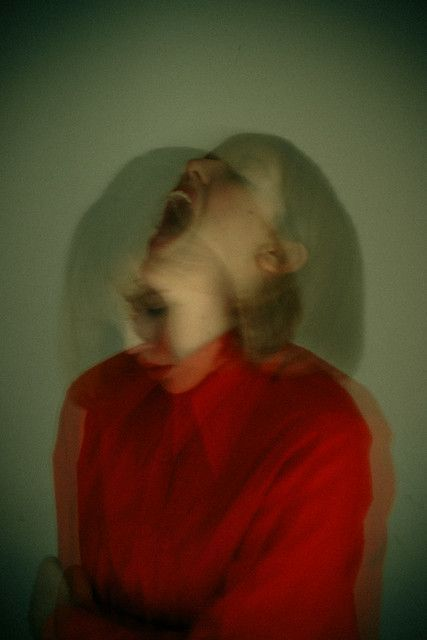
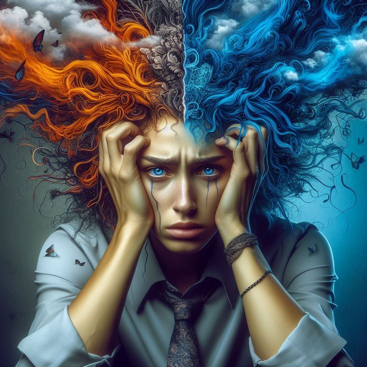
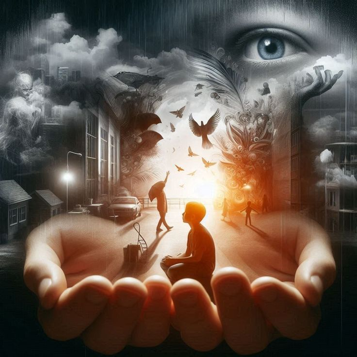
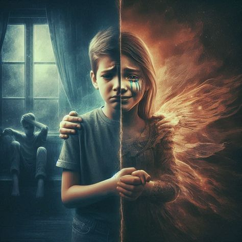
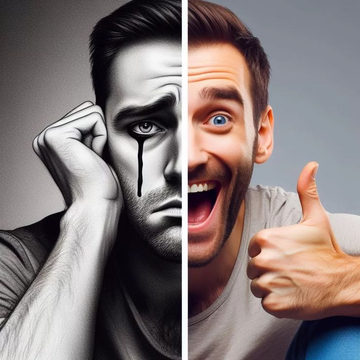

1. Manic Episode (Emotional High)
A manic episode is characterized by an elevated mood, hyperactivity, and an increase in energy levels. It can last for at least a week and disrupt daily life.
- Extreme euphoria or irritability
- Increased energy and activity levels
- Decreased need for sleep
- Impulsive behavior (e.g., spending sprees, risky decisions)
- Talking rapidly and jumping from topic to topic
2. Hypomanic Episode (Mild Mania)
A hypomanic episode is a less severe form of mania. The symptoms are similar to mania but are less disruptive.
- Mildly elevated mood or irritability
- Increased energy or creativity
- Increased confidence but without the extreme behavior seen in mania
3. Depressive Episode (Emotional Low)
Depressive episodes involve periods of deep sadness, hopelessness, and a lack of interest in life. These episodes can last for weeks or months.
- Persistent sadness or hopelessness
- Loss of interest in daily activities
- Fatigue or loss of energy
- Changes in sleep (either insomnia or excessive sleep)
- Difficulty concentrating or making decisions
- Feelings of worthlessness or guilt
- Thoughts of death or suicide
4. Mixed Episodes
A mixed episode occurs when symptoms of both mania and depression happen simultaneously or in quick succession. This can be especially confusing and distressing.
- Rapid cycling between depressive and manic moods
- Irritability and restlessness
- Engaging in risky behaviors while feeling hopeless or sad
physical and mentally effect of Bipolar disorder
 Racing Thoughts
Extreme Mood Swings
Overcompensating
Depression
 Isolation
 Emotional Toll
Supressing Emotions
Absenteeism
Suicidal Thoughts